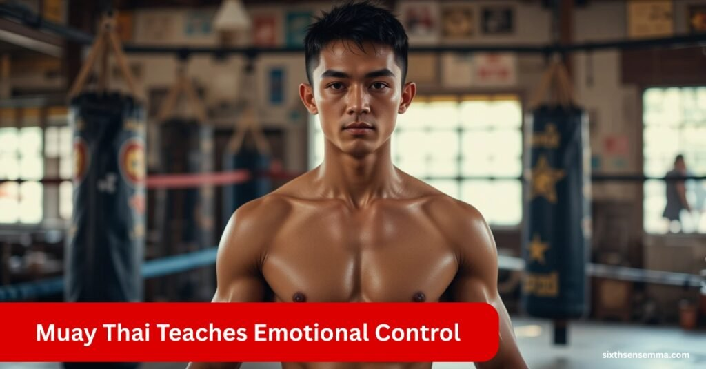
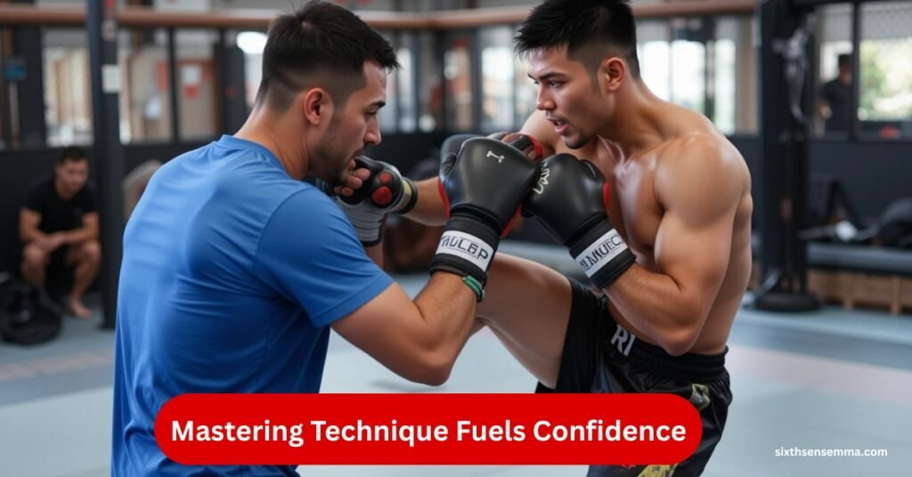
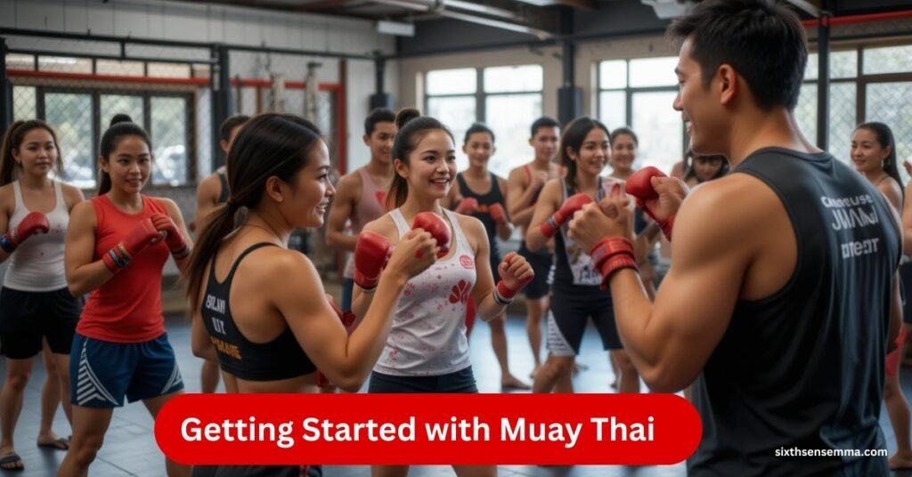

What Muay Thai Thai Boxing Can Teach You About Confidence

Muay Thai Thai Boxing is more than just a beautiful combat sport. Originating from the rich heritage of Thailand, this martial practice weaves together centuries-old tradition, tactical combat, and mental refinement. Every motion whether a devastating elbow, a strategic knee, or a precise clinch—reflects control, awareness, and resilience. It doesn’t merely teach how to fight; it engrains how to stand tall under pressure, to channel aggression into focus, and to build unshakable inner belief through continuous struggle and discipline.
Beyond the battlefield of the ring, Muay Thai becomes a silent architect of one’s self-worth. As the body grows stronger, the mind learns to navigate adversity with calm clarity. Through repetition and hardship, practitioners develop a deep-rooted confidence that seeps into daily life—altering the way they walk, speak, and think. It forges a mentality that no longer fears conflict, but faces it with balanced power and mental precision. In essence, Muay Thai is not just a fight—it’s a foundation of identity, a pathway to courage, and a mirror of one’s personal strength.
Journey of Strength and Confidence with the Sixth Sense MMA
Sixth Sense MMA is for those who seek more than just physical fitness, it’s for individuals ready to unlock real inner strength and unshakable confidence. Each training session is designed to build not only your body but also your mindset, guiding you toward a more focused, disciplined lifestyle. It’s a journey where you step out of your comfort zone, set new goals daily, and achieve them with pride. At Sixth Sense MMA, you’re not just learning techniques, you’re entering an environment where self-growth, resilience, and personal empowerment naturally evolve.
Origins of Muay Thai and Its links to Confidence
Muay Thai began as a battlefield necessity, forged in the fires of war where survival depended on mastering one’s own body. Over time, it became a symbol of national identity, rooted in spiritual discipline, technical precision, and a mindset that values respect over rage.
This evolution from survival tactic to cultural pillar laid the groundwork for building a calm, focused, and humble confidence—not just through fighting skills, but through mental conditioning and emotional control.
Core Pillars:
Warrior Foundation: Originally developed for soldiers, it instills a fearless mindset rooted in purpose and duty.
- Spiritual Rituals: Pre-fight practices like Wai Kru teach gratitude, presence, and emotional grounding.
- Strategic Scoring System: Rewards intelligent decision-making and technique over brute force, reinforcing self-trust.
- Cultural Respect Hierarchy: Builds internal discipline by teaching honor toward coaches, opponents, and self.
- Mental Endurance Training: Consistent physical grind leads to quiet, earned confidence in everyday life.
The Physical Discipline of Muay Thai Builds Self-Assurance
Training in Muay Thai challenges the body to break limits and perform under pressure, shaping more than just strength—it cultivates a deep physical self-respect. As the body sharpens through explosive drills and high-intensity routines, individuals gain mastery over movement, increased stamina, and muscular confidence.
Each jab, kick, and elbow becomes a tool of precision and power, reinforcing the connection between physical skill and personal empowerment. The transformation isn’t just visual—it’s felt in posture, balance, and the way one holds space with assurance.
How Muay Thai Physically Builds Confidence
- Full-Body Conditioning: Enhances endurance, mobility, and body control, building real-time trust in one’s physical capabilities.
- Combat Precision: Daily practice of striking techniques improves coordination, reaction speed, and movement confidence.
- Gear Familiarity: Training with proper gloves, pads, and shorts creates technical comfort, reducing hesitation and boosting readiness.
- Cardiovascular Health: Improves heart strength and oxygen efficiency, making the body feel powerful and resilient.
- Confidence Through Science: A 2022 study showed a 30% rise in self-esteem after 8 weeks of consistent combat training—proof that physical mastery fuels mental confidence.
Mastering Technique: How Skill Development Fuels Confidence
In Muay Thai, mastering technique is a layered journey that nurtures self-confidence through repetition, growth, and earned progress. As practitioners move from basic footwork and stance to mastering advanced tools like the clinch and counter-strategies, they build more than physical ability—they gain mental proof of their evolution.
Every movement refined, every strike perfected becomes a marker of discipline, intelligence, and control, feeding a quiet but unshakable belief in one’s own capability.
Stages of Skill Mastery That Strengthen Confidence
| Training Phase | Confidence Benefit |
|---|---|
| Fundamentals (Footwork, Guard, Strikes) | Creates a strong base, instilling self-trust in form and balance |
| Intermediate Tactics (Combos, Timing) | Builds rhythm and decision-making, supporting situational confidence |
| Advanced Techniques (Clinch, Counters) | Encourages mastery and strategy, fueling achievement-based belief |
| Goal Setting & Reflection | Reinforces growth by tracking milestones and progress |
| Micro Wins in Training | Each small success affirms personal power and potential |
Mental Toughness and Muay Thai: Strengthening Your Mind

Mental Toughness and Muay Thai: Strengthening Your Mind
Muay Thai training builds strong mental resilience by pushing practitioners to maintain focus, emotional balance, and calmness under pressure. The demanding environment teaches fighters to control stress and fear while staying patient and alert.
Sparring sessions sharpen the ability to remain composed in challenging moments, and breathing techniques further enhance mental clarity.
Focused Anticipation
Training in Muay Thai sharpens the mind to anticipate opponents’ moves quickly, requiring intense concentration and quick decision-making. This heightened awareness cultivates the ability to stay present and think strategically in fast-paced situations.
Emotional Control
Practitioners learn to manage fear and anxiety by controlling their emotional responses during training and fights.Even under stressful situations, this emotional control keeps one composed and peaceful.
Resilience Building
Regular sparring exposes fighters to mental and physical challenges that build resilience. Overcoming difficulties in the ring translates into stronger mental toughness and the ability to recover from setbacks with confidence.
Mindful Breathing
Controlled breathing techniques taught in Muay Thai reduce anxiety, clear mental fog, and help maintain focus. This mindfulness practice is essential for staying calm and centered during intense moments.
Stress Resistance
Through consistent practice, Muay Thai instills a confidence that is resistant to external stressors, enabling practitioners to face daily life challenges with a steady and composed mindset.
The Role of Sparring in Building Real-World Confidence
Sparring in Muay Thai provides a safe yet challenging environment where practitioners build genuine courage by facing realistic fight scenarios. It trains combatants how to remain composed under duress and quickly adjust to sudden shifts. Experiencing and overcoming difficulties during sparring strengthens persistence and deepens self-confidence. This hands-on practice helps translate Muay Thai skills into real-life situations with greater assurance.
Discipline and Routine: Foundations of Confidence in Muay Thai
Commitment to daily Muay Thai training shapes more than physical skills—it forges lasting discipline and strong habits that empower confidence beyond the gym. The rigorous conditioning builds increasing endurance and strength, allowing practitioners to push their limits steadily. Repeated practice of techniques sharpens focus and nurtures a goal-driven mindset, helping athletes stay motivated and purposeful.
The structured environment of classes teaches valuable lessons in time management and self-regulation, essential traits for maintaining balance in both training and everyday life. This solid foundation equips fighters to face obstacles with calm resolve and unwavering self-assurance.
Consistent Physical Conditioning
Daily training improves cardiovascular endurance and muscular strength, reinforcing the body’s capacity to handle physical and mental stress with confidence.
Technique Practice and Focus
Regular repetition of Muay Thai strikes and movements enhances concentration, helping practitioners develop a sharp and steady mindset aligned with their goals.
Structured Routine and Discipline
The predictable schedule of training sessions cultivates self-discipline, encouraging efficient use of time and fostering habits that translate into other life areas.
Building Steadiness and Assurance
With a disciplined routine in place, practitioners gain the ability to approach challenges calmly, relying on the confidence built through consistent effort and resilience.
How Muay Thai’s Respect Culture Enhances Self-Worth
In Muay Thai, respect is not just tradition—it’s identity. From performing the Wai Kru ritual to honoring coaches and peers, practitioners develop a deep sense of humility and gratitude. Training in such an environment fosters mutual support, strengthening both character and confidence. Following strict etiquette teaches self-discipline, while honoring the art builds inner self-worth that naturally reflects in everyday interactions.
Overcoming Fear and Building Courage Through Muay Thai
Muay Thai empowers practitioners to face fear head-on and transform it into a source of strength. The intense environment of sparring allows fighters to confront anxiety directly, gradually reducing the natural apprehension linked to confrontation. This shift in mindset teaches that fear is not a signal to retreat but an alert to focus and rise to the challenge. Techniques such as visualization and controlled breathing play a crucial role in channeling nervous energy into calm, confident action.
Over time, this consistent mental training cultivates true courage that extends far beyond the ring, positively impacting everyday challenges and boosting overall personal confidence.
Components of Fear Management in Muay Thai
| Component | Description |
|---|---|
| Confronting Anxiety | Sparring exposes fighters to controlled confrontation, easing fear. |
| Mindset Shift | Fear is reframed as a signal to focus, not avoid difficulty. |
| Visualization | Mental rehearsal prepares the mind for confident responses. |
| Controlled Breathing | Regulates nervous energy, promoting calmness during stress. |
| Courage Beyond Fighting | Builds lasting bravery applicable to real-life situations. |
Psychological Impact of Muay Thai on Self-Image
Regular Muay Thai training significantly improves self-image by enhancing both physical and mental strength. As individuals master complex strikes and techniques, they develop a greater sense of personal capability and control. Visible improvements in fitness, posture, and coordination naturally boost body confidence.
This shift in how practitioners view themselves fosters self-respect and pride in their progress. With time, Muay Thai shapes a resilient mindset that supports lasting emotional stability and inner confidence.
Confidence Beyond the Ring: Applying Muay Thai Lessons in Daily Life
The confidence developed through Muay Thai extends well beyond the sport itself, shaping how practitioners interact in both personal and professional settings. Training enhances assertive communication, enabling individuals to express themselves clearly and respectfully. The mental toughness gained encourages calm, effective decision-making even when under pressure.
Moreover, the strong sense of teamwork and respect cultivated within Muay Thai communities fosters leadership abilities. Together, these lessons build a lasting and genuine confident presence that benefits every aspect of life.
Assertive Communication
Muay Thai training strengthens the ability to communicate clearly and confidently, encouraging respectful self-expression in everyday interactions.
Effective Decision-Making
The mental discipline developed helps practitioners stay focused and composed, enabling smarter choices during stressful situations.
Leadership Development
Through shared experiences and mutual respect in training groups, practitioners build leadership skills and the ability to inspire others.
Confident Presence
Applying these qualities daily creates a strong, assured demeanor that positively impacts relationships and professional success.
Stories from Practitioners: Real Confidence Transformations
Muay Thai training sparks profound personal changes, where individuals shift from self-doubt to strong inner confidence. Many practitioners highlight how the journey improves their mental resilience and equips them with tools to face both physical and emotional challenges. These experiences foster a renewed sense of self-worth and determination that influences their lives well beyond the training environment.
Overcoming Self-Doubt: Through consistent Muay Thai practice, individuals gradually replace fear with growing confidence in their abilities.
Mental Resilience: Training sharpens emotional strength, enabling practitioners to handle stress and setbacks more effectively.
Holistic Growth: The lessons learned during Muay Thai contribute to a deeper sense of self-respect and life purpose.
Lasting Impact: Practitioners often find that their confidence improvements extend into personal and professional areas, transforming how they approach challenges.
Common Misconceptions About Muay Thai and Confidence
Many people mistakenly view Muay Thai as purely violent or aggressive, ignoring its transformative impact on mindset and character. While it involves physical combat, the discipline also fosters emotional growth, mental clarity, and self-control. The respectful culture and rituals at its core build community values, not hostility.
Confidence built through Muay Thai is deep-rooted, extending far beyond the gym and into real-life interactions. Dispelling these myths allows for a more accurate appreciation of its well-rounded benefits.
Getting Started with Muay Thai Building Confidence from Day One

Getting Started with Muay Thai Building Confidence from Day One
Starting Muay Thai is a journey of both physical and mental growth. Selecting the right gym that offers supportive beginner classes lays a strong foundation for learning and confidence-building. Approaching training with realistic, achievable goals focused on skill improvement rather than just competition helps maintain motivation and reduces pressure.
Together, these steps establish a solid base for long-lasting confidence as practitioners develop their Muay Thai abilities.
Tips for Building Confidence from Day One
Choose a Beginner-Friendly Gym: Find a training environment that prioritizes safe and clear instruction for newcomers to build comfort and trust from day one.
Set Realistic Goals: Focus on gradual improvements in technique and fitness instead of immediate victories to maintain steady confidence growth.
Celebrate Small Milestones: Acknowledging progress, even in minor skills or endurance gains, nurtures positive motivation and keeps beginners engaged.
Build a Positive Foundation: These thoughtful early steps create a supportive mindset essential for long-term success and self-assurance in Muay Thai.
Muay Thai vs. Other Martial Arts: Unique Confidence Benefits
Muay Thai offers a distinctive path to building confidence through its combination of intense physical training, strategic mental challenges, and rich cultural heritage. Unlike many other martial arts, it emphasizes high-level endurance, precision in full-contact striking, and a deep respect for tradition. These qualities create a confidence that is not only practical for real-world situations but also deeply rooted in discipline and respect for the art.
| Aspect | Muay Thai | Other Martial Arts |
|---|---|---|
| Mental Endurance | Strong focus on strategy, patience, and fight IQ | Varies widely; often less emphasis on fight strategy |
| Physical Conditioning | Intensive training for strength, agility, and stamina | May prioritize technique over conditioning |
| Cultural Depth | Rich traditions including rituals and respect codes | Generally less cultural or ritual focus |
| Practical Skills | Full-contact techniques including elbows, knees, clinch | Often non-contact or grappling-focused |
Together, these elements shape a form of confidence that is both battle-tested and deeply respectful, offering practitioners a unique edge compared to other combat arts.
Role of Coaches and Community in Building Confidence
Supportive coaches and a strong Muay Thai community play a vital role in shaping a practitioner’s self-belief. Expert trainers offer more than technical guidance—they serve as mentors, boosting morale and helping individuals push past mental limits. Regular encouragement nurtures self-trust, while shared challenges within a training group foster camaraderie and accountability.
This positive environment not only enhances skill development but also builds a resilient, confident mindset that grows with every session.
How to Maintain and Grow Confidence Long-Term with Muay Thai
Building confidence through Muay Thai is just the beginning—sustaining it demands consistency, evolution, and mindset growth. As practitioners progress, they must adapt their training goals to stay mentally and physically engaged. Whether it’s perfecting a challenging clinch technique or increasing stamina during pad work, setting new benchmarks keeps motivation alive.
By continually refining Muay Thai strikes, such as precise elbows or well-timed counters, fighters deepen their skills and reinforce their belief in their abilities. Tackling training plateaus through diverse sparring partners or higher intensity workouts prevents stagnation and stimulates growth. In the long run, it’s the unwavering discipline and willingness to evolve that keeps confidence expanding both in the ring and beyond it.
Spiritual Side of Muay Thai and Its Influence on Confidence
Muay Thai’s spiritual foundation adds a profound layer to the development of self-confidence. Practices like meditation and breathing control sharpen mental focus and foster emotional clarity, creating a balanced internal state. Traditional rituals, such as the Wai Kru, instill a deep connection to culture, purpose, and self-discipline.
These elements not only support the professional but alsoinner peace, which complements the physical strength developed through training. As a result, confidence emerges from both mental harmony and spiritual resilience, offering strength that reaches far beyond the ring.
Confidence as a Tool for Empowerment Through Muay Thai
Muay Thai builds more than just fighting skills—it nurtures confidence that empowers life decisions. Through regular training, practitioners develop a sense of capability and control, allowing them to confront obstacles with courage. The art’s deep discipline and mental toughness fuel not only personal development but also inspire long-term ambition.
Many individuals experience a boost in self-respect, becoming more proactive in setting and achieving goals. With each session, Muay Thai becomes a source of empowerment, unlocking confidence that transforms lives both inside and outside the gym
Why Sixth Sense MMA is the Smartest Choice for Real Muay Thai Training Sixth Sense MMA
we believe Muay Thai is more than just a workout, it’s a journey of self-discipline, strength, and transformation. Our gym has earned the trust of both local and international clients because we deliver real results with a personal touch.
Benefits of Training at Sixth Sense MMA
- Confidence & Mental Strength
Our training builds discipline, focus, and self-belief that lasts beyond the gym. - Authentic Muay Thai Techniques
Learn real fighting skills from expert trainers with deep knowledge of the sport. - Tailored Programs for All Levels
Whether you’re a complete beginner or a seasoned fighter, we adjust to your pace and goals. - Safe, Clean, and Positive Environment
Train in an environment that puts your health and safety first. - Stress Relief & Mental Clarity
Muay Thai is not just physical — it sharpens your mind and helps you manage stress. - Supportive Global Community
Join a welcoming group of local and international members who motivate and grow together.
Contact Us | Sixth Sense MMA
We’re here to help you take the first step in your Muay Thai journey. Whether you have questions about training, schedules, or want to visit us in person, our team is ready to guide you.
Customer reviews:
Jessica M. (Australia)
“I trained at Sixth Sense MMA during my 3-month stay in Pakistan — honestly, it’s better than many gyms back home. The trainers are world-class!”
David L. (UK)
“Exceptional coaching, welcoming environment, and serious Muay Thai technique. I felt improvement in just two weeks.”
Sophie T. (France)
“I came as a beginner and left with real fighting skills. Sixth Sense MMA gave me confidence I never had before.”
Liam H. (Canada)
“Professional, respectful, and highly motivating. The trainers really know how to push you without making it overwhelming.”
Conclusion
Muay Thai is far more than a combat sport it’s a comprehensive journey toward confidence and self-mastery. By blending physical rigor, mental resilience, cultural respect, and spiritual depth, it empowers individuals to develop authentic self-belief. Whether facing opponents or life’s daily challenges, those who train in Muay Thai carry a deep-rooted confidence shaped by discipline, humility, and inner strength. This enduring transformation is what makes Muay Thai not just a practice but a path to personal empowerment.
FAQ’s
Muay Thai builds confidence by combining physical strength, mental resilience, emotional control, and disciplined training. Practitioners develop self-trust, overcome fears, and gain a powerful sense of inner capability through consistent practice and personal growth.
Absolutely. Muay Thai offers beginner-friendly training that focuses on building foundational skills, discipline, and physical conditioning—all of which directly boost self-esteem and mental assurance over time.
Muay Thai improves mental toughness, emotional balance, and stress resistance. It teaches practitioners how to handle pressure, stay calm, and build resilience—key components of strong psychological health and confidence.
Yes. Controlled sparring and mindful breathing techniques help practitioners confront fear, manage anxiety, and turn nervous energy into calm, confident action, both in and out of the ring.
Physical transformation through Muay Thai leads to improved posture, strength, mobility, and endurance. These changes create body-awareness and a sense of physical capability that fuels confidence.
Muay Thai is a holistic discipline. Beyond fighting, it teaches goal-setting, time management, respect, leadership, and emotional control—skills that benefit all aspects of life.
Yes. The confidence gained through training enhances assertive communication, while teamwork and shared challenges foster leadership qualities and the ability to inspire others.
Sixth Sense MMA offers authentic training, expert coaching, and a disciplined yet welcoming atmosphere. With tailored programs and a focus on personal transformation, it helps individuals grow physically, mentally, and emotionally through Muay Thai.
Train with us in Coppell
The first class is free. Shorts, a t-shirt and a water bottle. We lend the rest.
Book a free class